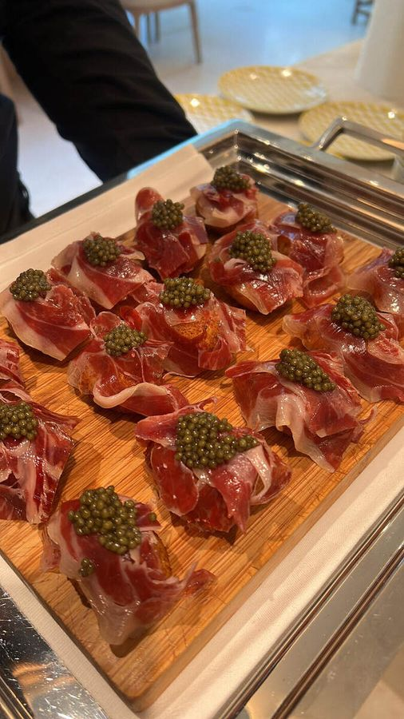

Private Chef in
Dulwich
London Residential
Bespoke fine dining cooked in your own home across Dulwich — seasonal ingredients, fine-dining technique, and a fully discreet service.

Private dining, cooked exactly where you are.
Dulwich's village feel, excellent schools, and larger family gardens have made it one of South London's most desirable areas for the kind of household that entertains regularly — birthday parties, school-related celebrations, and family gatherings throughout the year. Alejandro's approach to family-focused menu planning, including a genuine range for guests spanning multiple generations, suits Dulwich particularly well. The area's well-known picture gallery and park also make it a popular setting for a celebration tied to a family day out. Dulwich's cluster of well-regarded schools means the local calendar is punctuated by end-of-term celebrations, leaving dos and class gatherings, several of which end up as private dinners hosted at home for a smaller group of close friends rather than at a restaurant or school hall. Alejandro's family-friendly menu planning, including genuinely good options for children rather than an afterthought, suits this kind of event particularly well. Flagging a rough guest list, including children, through the contact form helps shape the right menu. The Dulwich Picture Gallery's own events calendar occasionally overlaps with a private celebration nearby, with families timing a dinner to follow an exhibition opening or a cultural talk at the gallery. Dulwich Park's boating lake and playgrounds also make the area a popular choice for a children's birthday party held partly outdoors, with Alejandro's team planning a menu that works for both the children's party itself and a separate, more adult-focused evening gathering later the same day. Dulwich College and the area's other well-known schools bring an annual calendar of fundraising and community events, several of which lead to a private dinner booking for the organising committee or honoured guests afterwards. The neighbourhood's strong sense of community also means a number of Dulwich bookings come through direct personal recommendation between neighbouring families, rather than a first-time enquiry out of the blue. Family-focused Dulwich events, particularly those involving a wide age range of guests, benefit from an early conversation about dietary needs and preferences across the group so the menu can be planned to suit everyone from the outset. This is a quick and genuinely useful first step. School-term Dulwich bookings, often arranged at short notice around an end-of-term date, are handled with the same care as a longer-planned celebration, with the team happy to work within a tighter timeline where needed. A dedicated children's course, served alongside the main adult menu, is a standard offering for family-focused Dulwich bookings rather than a last-minute addition.
Private chef in Dulwich: key facts
Alejandro Nicolau is a London-based private chef who cooks in private homes and venues in Dulwich: tasting menus, event catering and meal prep, with his own team of chefs, bartenders and waiters.
- Service
- Private chef service in Dulwich, in your own kitchen or venue
- Area
- Dulwich (London Residential)
- Chef
- Alejandro Nicolau, trained in San Sebastian under Martin Berasategui (3 Michelin stars)
- What you get
- A bespoke menu planned with you, shopping, cooking, service and a clean kitchen afterwards
- How to book
- Send your date, guest count and ideas for Dulwich through the enquiry form on contact.html; a tailored proposal follows within 24 hours
A journey around the world,
served on a single plate.
Menus tailored to each client, fusing the finest ingredients from different culinary traditions — wherever in Dulwich you're hosting.
Recent dishes



Where Alejandro cooks in Dulwich
Private Household
Resident or recurring chef service for family homes in Dulwich.
02Private & Corporate Events
One-off dinners, celebrations and corporate receptions in Dulwich, planned end to end.
03Gala Dinners
High-end receptions for private clients and luxury brands.
04International
Travel coordinated with team, menu and logistics fully arranged.
05Yachts & Superyachts
Onboard chef service, available for coastal charters and moorings.
06Cocktail & Bar Service
Bespoke bar setup and drinks menus, personalised for your event.
Private Chef in Dulwich — FAQs
Yes, family-focused events are a particularly common and well-suited booking type for this area.
Yes, the whole Dulwich area is within the regular South London service radius.
Yes — thoughtful options for younger guests are built into family-focused menus here, rather than treated as a simple extra.
Yes — this is a common request, with two distinct menus planned for the different parts of the day.
Yes, this kind of event is a familiar and well-suited booking type for this area, alongside the more typical family celebrations.